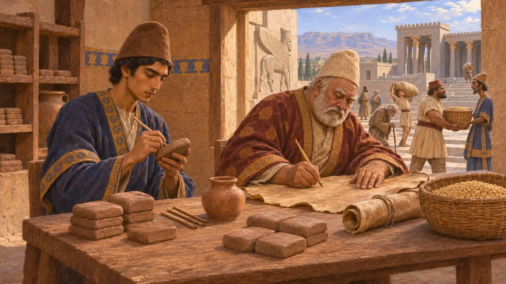
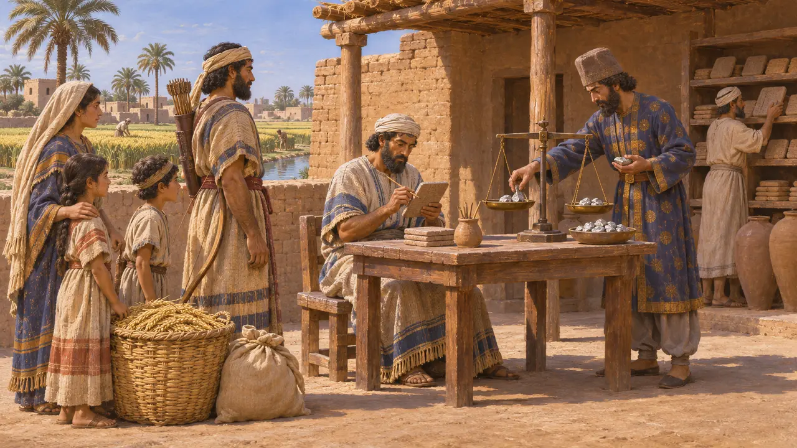
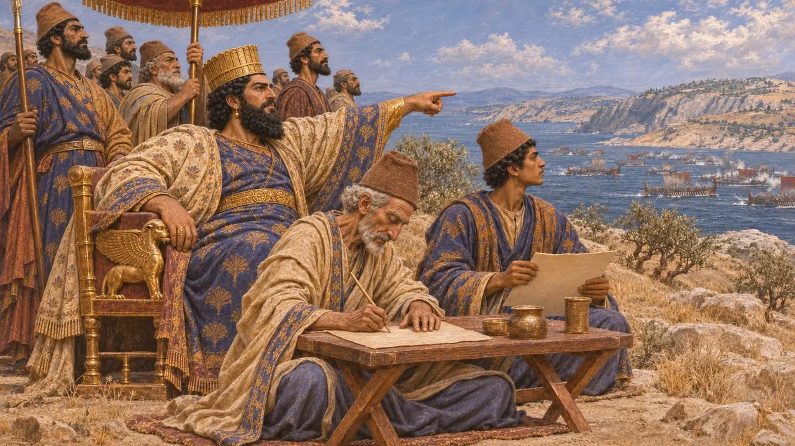
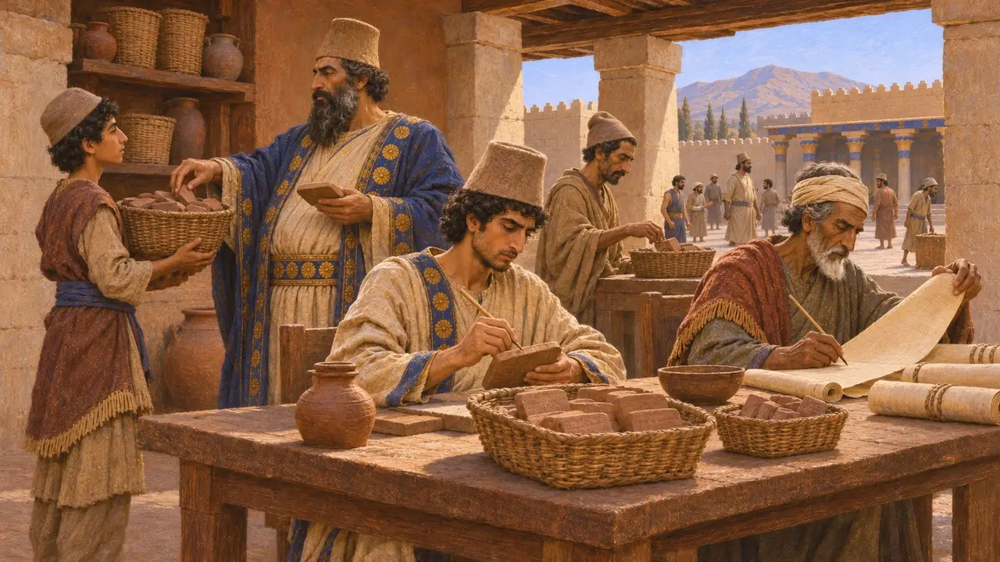
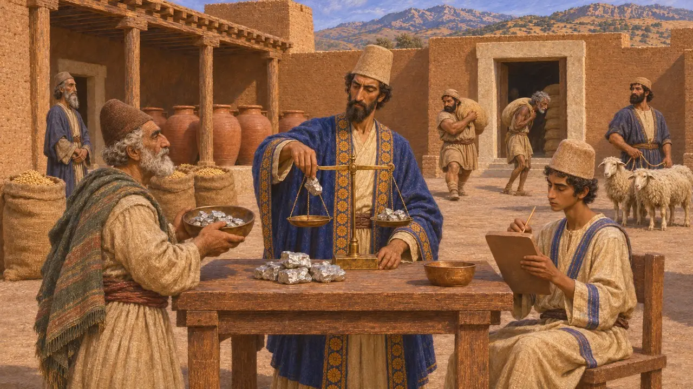

Escritório dos Escribas
Escritório de registros e taxas reais, Império Aquemênida, c. 530-479 AEC
No jogo: Nível 1: O Túmulo do Fundador
O domínio persa funcionava com base em registros escritos. Escribas contavam rações, rebanhos, trabalhadores, terras e tributos devidos em tabuletas de argila e em couro, em várias línguas, para que os funcionários em Persépolis, Susa ou Babilônia pudessem verificar o que era devido e o que fora pago. Sem eles, as propriedades, as estradas e o tributo do Rei não poderiam ter sido administrados.
No jogo: Os escribas registram as famílias, e só as casas registradas pagam prata. Isso simplifica a história: os tributos persas recaíam sobretudo sobre a terra, eram muitas vezes pagos em grãos, gado ou trabalho, e a prata costumava ser pesada, e não contada como moeda, mesmo depois da cunhagem de Dario.

Argila e couro em Persépolis
Nos registrosAs tabuinhas da Fortificação de Persépolis, datadas de cerca de 509-493 AEC, são milhares de registros de alimentos destinados a trabalhadores, viajantes, animais e deuses, em sua maioria em elamita, com alguns em aramaico. Os escribas aparecem nomeados nelas e também recebiam rações. Algumas tabuinhas mencionam escribas que escreviam em peles, provavelmente em aramaico, o que mostra que documentos de couro existiram outrora ao lado dos de argila que sobreviveram.
R. Hallock, Persepolis Fortification Tablets, 1969; W. Henkelman, The Other Gods Who Are, 2008

Contando terras e encargos na Babilônia
Nos registrosOs arquivos babilônicos mostram como os encargos eram controlados. A terra era concedida a soldados e suas famílias como terra do arco, terra do cavalo ou terra do carro, e os detentores deviam serviço, produtos e prata. Os textos de Murashu, de Nippur, escritos mais tarde no século V, registram firmas que administravam esses lotes e pagavam os encargos por eles, de modo que o sistema já estava bem estabelecido nessa época.
M. Stolper, Entrepreneurs and Empire, 1985; P. Briant, From Cyrus to Alexander, 2002

Escribas ao lado do Rei
Relato antigoHeródoto situa os escribas reais perto do poder. Em sua história de Oroetes, um escriba real leu em voz alta cartas seladas do Rei diante da guarda do sátrapa. Em Salamina, segundo ele, Xerxes assistiu ao combate enquanto seus escribas registravam os nomes dos capitães que se destacavam, junto com os de seus pais e de suas cidades.
Herodotus 3.128; Herodotus 8.90

Quem escrevia em Persa Antigo
DisputadoEm Behistun, Dario diz ter criado uma nova forma de escrita, o que muitos estudiosos entendem como a escrita cuneiforme do persa antigo. Outros argumentam que ela já existia antes, embora as breves inscrições em nome de Ciro em Pasárgada sejam hoje geralmente consideradas acréscimos posteriores. De todo modo, a administração cotidiana era escrita em elamita, aramaico e babilônio, e quase nunca em persa antigo.
DB §70; P. Briant, From Cyrus to Alexander, 2002

Tributo em prata
Relato antigoHeródoto conta que Dario dividiu o império em províncias e fixou o tributo anual de cada uma em talentos de prata, enquanto os persas da Pérsis nada pagavam. Seus totais são esquemáticos, e os historiadores os tratam com cautela. As tabuinhas mostram que grande parte do que a coroa arrecadava vinha em espécie, como cevada, vinho, ovelhas e trabalho.
Herodotus 3.89; Herodotus 3.97
Fontes
- R. Hallock, Persepolis Fortification Tablets, 1969
- W. Henkelman, The Other Gods Who Are, 2008
- P. Briant, From Cyrus to Alexander, 2002
- M. Stolper, Entrepreneurs and Empire, 1985
- Herodotus 3.89, 3.97, 3.128, 8.90
- DB §70